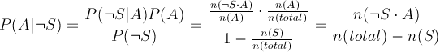

我的手机管家
来电管理
本程序可以根据来电号码采取不同的策略：
- 该号码在拒绝号码列表里：直接自动挂断电话，并记录在系统的通话历史中。
- 该号码在亲情号码列表里：若通话未成功（长时间未接听、对方挂断电话、己方挂断电话），自动发送预先设置好的亲情提示信息（默认开启）。
- 该号码同时在拒绝与亲情号码列表里：先直接自动挂断电话，再发送亲情提示信息（如果自动回复开启的话）。
- 该号码不在任何号码列表里：按照正常情况进行处理。
短信管理
首先，本程序根据来电号码采取不同的策略：
- 该号码在拒绝号码列表里：该号码的短信直接被拦截，保存在已拦截短信列表里。
- 该号码在亲情号码列表里：该号码的短信直接被放行。
- 该号码同时在拒绝与亲情号码列表里：默认拦截，可以在选项里设置为放行。
- 该号码不在任何号码列表里：按照接下来的规则进行处理。
然后，对于那些不在任何号码列表里的号码发来的短信：
- 首先是基于关键字的过滤：若短信中出现垃圾关键字，则被拦截。如果没有，则按以下规则处理。
- 然后是基于贝叶斯公式的过滤：设短信中出现垃圾关键字的事件为 S，设短信是垃圾短信的事件为 A，则根据贝叶斯公式，当短信中没有垃圾关键字的时候该短信是垃圾短信的概率为
- 如果概率大于等于0.5：当作是垃圾短信，被拦截。
- 如果概率小于0.5：不被当作是垃圾短信，被放行。
开关服务
本程序需要开启一个后台服务来监听电话与短信，因此安装本程序之后请允许本程序在后台运行（默认开启）。
并且本程序需要一定的系统权限，因此安装本程序之后请将本程序添加到系统的信任程序列表里（默认关闭）。
服务的开启与关闭可以通过单击“打开服务”或者“关闭服务”来设置。
该服务程序在 Android 4.0.4 系统环境下通过测试。
版本信息
版本: 1.0
作者：潘正威